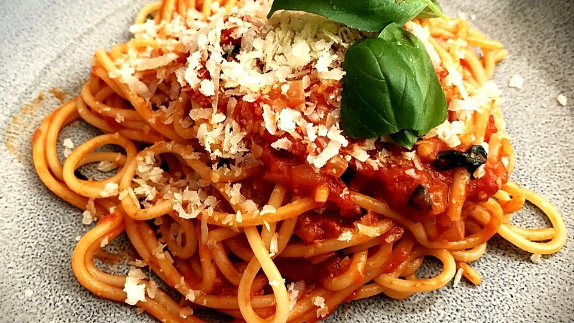

Classic Spaghetti

Spaghetti with tomato sauce
Spaghetti with tomato sauce is another one of the essentials
everyone should know about.
Ingredients
- A can of tomato sauce
- 500g of spaghetti
- 5 cloves of garlic
- Salt, pepper and oregano
- Olive oil
Steps
-
Cook the pasta according to the packaging and strain after.
-
In a pot add olive oil, 4 garlic cloves and some oregano.
Cook for 20 seconds then turn off the heat.
-
Add the drained pasta to pot with the garlic inside,
the tomato sauce, half a teaspoon of salt, some pepper
and another clove of garlic. Stir until its warm,
and now enjoy!
Return to home page